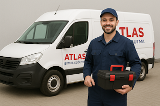

Gaziemir Binbaşı Reşatbey sakinleri için hazırladığımız özel mobil servis filomuzla, Vaillant marka cihazlarınızın bakım, montaj ve arıza onarım işlemlerini yerinde ve garantili olarak tamamlıyoruz.

Gaziemir bölgesindeki servis çağrınız merkezimize ulaştığı anda, Binbaşı Reşatbey konumuna en yakın gezici ekibimiz dinamik olarak rota belirler. Cihazınız yerinde incelenerek test edilir.
Gaziemir teknik servisimizde en sık çözüm ürettiğimiz kodlar ve durumlar:
Gaziemir genelinde verdiğimiz uzman teknik çözümler:
Mobil araçlarımız aşağıdaki tüm mahallelere eş zamanlı servis sağlamaktadır: